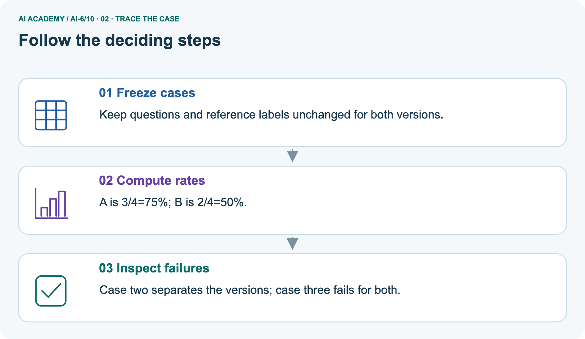
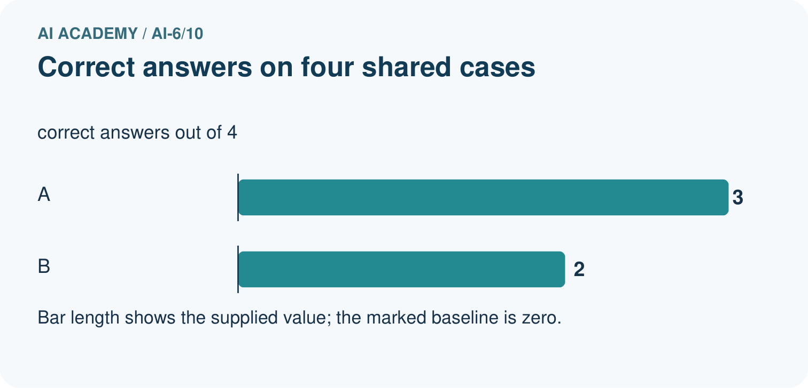
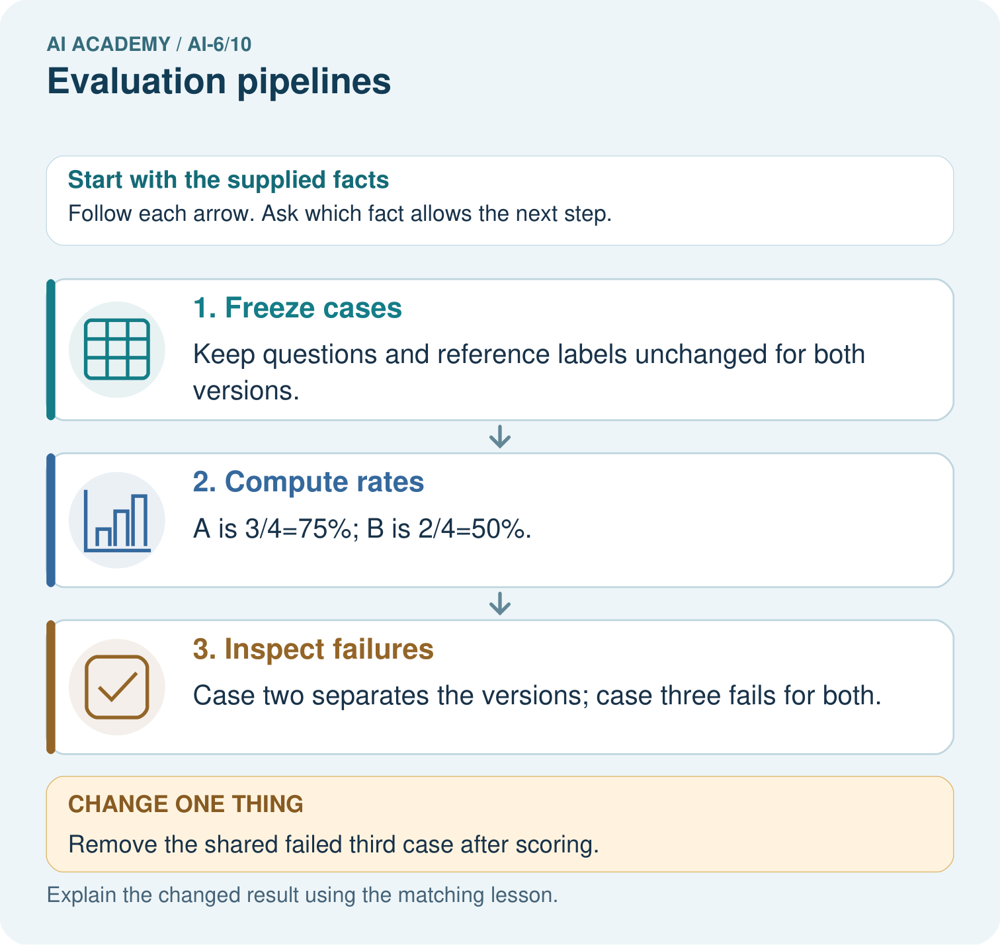
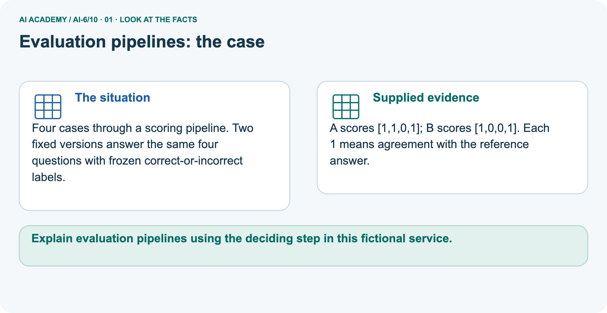
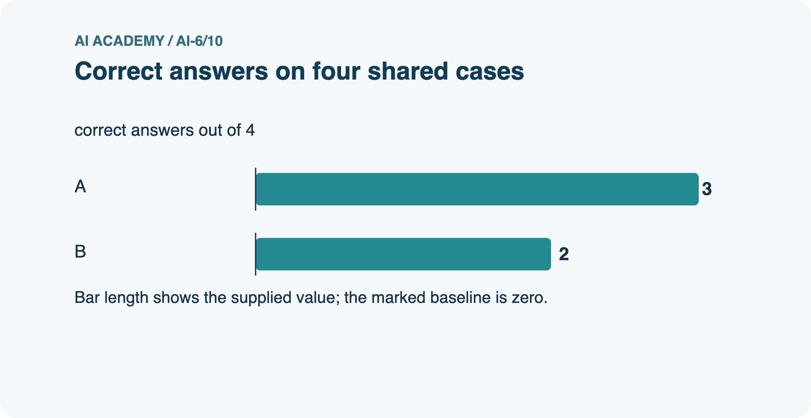
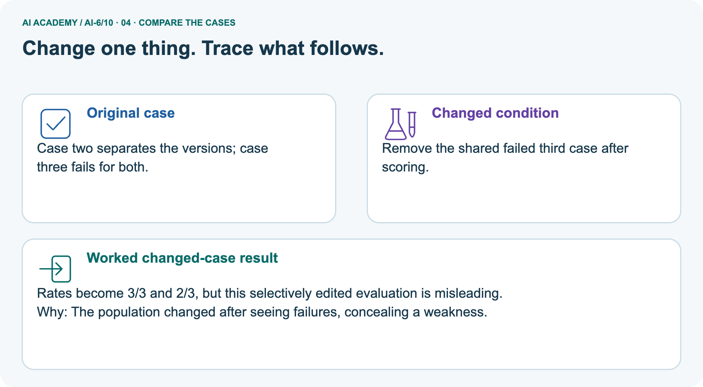
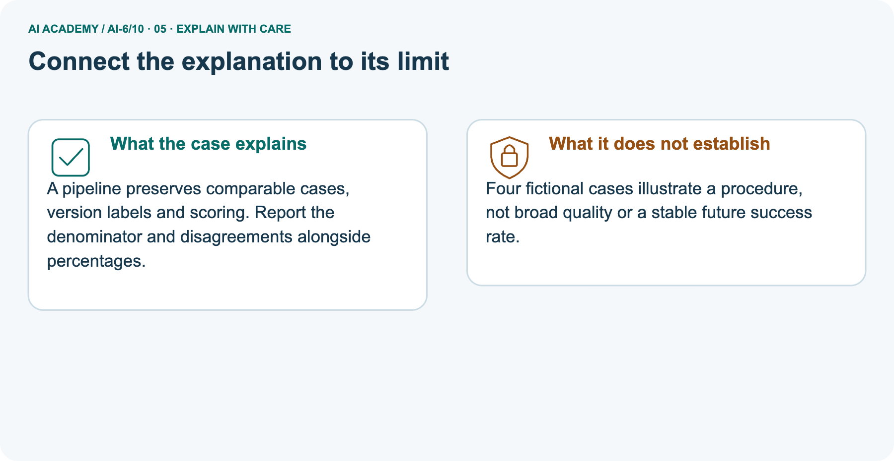
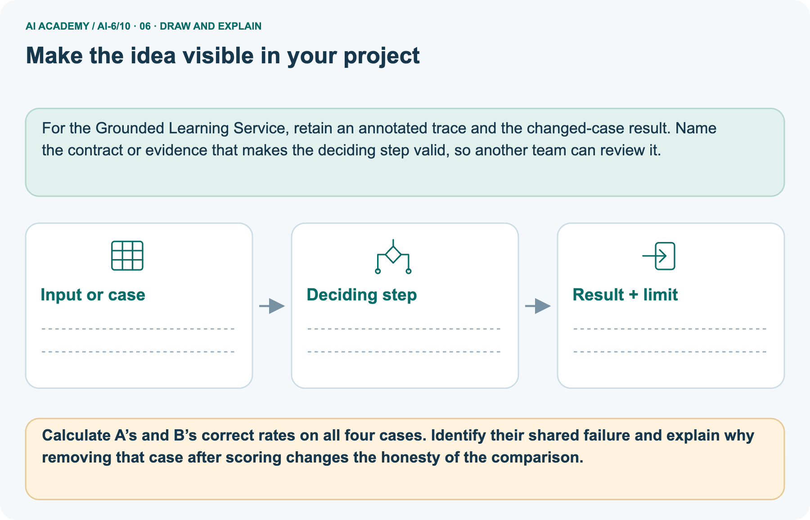

AI Academy · Level 6 · Grade 11 · Week 10 · Teacher guide
Evaluation pipelines
Learn to understand, design, build, test and explain AI systems responsibly.
Project: Grounded Learning Service
THE CONNECTED WEEK
Make absent and failed evidence impossible to hide in a percentage.
Use complete raw rows, explicit skip reasons and unchanged original comparisons before reporting metrics.
Keep one habit: Model two denominators → inspect record-set validation → diagnose selective deletion → assess fresh planned/completed counts → preserve rerun versions.
Main lesson · Section 1
Prepare the connected service investigation
Keep modelling, shared practice and independent evidence distinct.
Target and main teaching plan
Primary target: Explain the mechanism and terminology of evaluation pipelines
| Session | Sequence and minutes | Resources |
|---|---|---|
| Session 1 · Understand · 45 min | 0–7: recall and prerequisite; 7–15: inspect the concrete case and predict; 15–30: teacher models the worked trace; 30–40: learners explain a step using the text and visual; 40–45: check the core idea. | Use Your mission, Notice the evidence, See how it works, Words that unlock the idea and Follow a worked example; record recall in the workbook. |
| Session 2 · Practise · 45 min | 0–5: retrieve the procedure; 5–15: W2 completion practice; 15–23: explain and check with a partner; 23–30: each learner answers the misconception check; 30–40: targeted reteaching or a harder variation; 40–45: prepare the investigation. | Use Find and repair a mistake, Practise together and Build your understanding; use the matching workbook W2 and Individual reasoning check. |
| Session 3 · Investigate and transfer · 45 min | 0–5: retrieve the decision rule; 5–20: investigate or trace; 20–30: start the independent case; 30–38: connect the project; 38–43: act on feedback; 43–45: plan the return check. | Use Run the investigation, Connect your project and Try a new case independently. Allow extra time for the full task set. When code is supplied, use the examples in See how it works or Follow a worked example and the browser lab in Supported practice, repair and portfolio. |
This is a starting allocation of 135 minutes, not a validated duration. Preserve all named topics. Schedule extra time for connected examples, the full investigation, independent cases and project building.
Repeated copies of a case share one recorded attempt; they are not new evidence.
Preparation and prerequisite
Lesson and workbook; paper and pencil
Calculator and optional local Python 3 for arithmetic; no live API or private data
Prepare the fresh retry separately and withhold its solution until after collection
A result depends on the inputs, procedure and conditions that produced it. Preserve data roles and distinguish observed outcomes from predictions or unmeasured conditions.
If the prior concept cannot be explained, use a short retrieval activity before this chapter.
Opening retrieval
Without opening the old lesson, explain one key idea from Integration tests and fixtures. Give an example and a mistake that the idea helps you avoid.
Look for: Explain the mechanism and terminology of integration tests and fixtures
Reference example, not the only acceptable wording: Teacher explanation: Integration tests exercise connected components and failure propagation. Fixtures supply controlled input records and mocked service outcomes.
Trace request validation, session permission, lookup and output validation together. Include absent sources and failing dependencies; verify that denied requests never invoke restricted lookup.
Without opening the old lesson, explain one key idea from Testing pure components. Give an example and a mistake that the idea helps you avoid.
Look for: Explain the mechanism and terminology of testing pure components
Reference example, not the only acceptable wording: Teacher explanation: Pure components return results from supplied inputs without external side effects. They are easier to test with exact expected values.
Define remaining(capacity, used)=capacity-used for integer inputs satisfying 0<=used<=capacity. Invalid types/ranges raise an explicit validation error. Test zero and equality boundaries.
Without opening the old lesson, explain one key idea from Configuration and secrets. Give an example and a mistake that the idea helps you avoid.
Look for: Explain the mechanism and terminology of configuration and secrets
Reference example, not the only acceptable wording: Teacher explanation: Configuration supplies non-secret settings; secrets provide privileged values. Keep secrets out of source, logs and client responses.
The toy service reads DATA_VERSION from configuration and a signing secret from server-only input. Validate required settings at startup and fail clearly if absent; do not substitute a published default secret.
Pictured end goal
Explain evaluation pipelines using the deciding step in this fictional service.
Earlier wording, alternatives and picture transcripts
Teach the learning cycle
Retrieval answer guidance
Integration tests and fixtures
Testing pure components
Configuration and secrets
Use the three-session teaching cycle above, with extra time as needed. Evaluation pipelines preserve case versions, procedure versions and raw outcomes before producing metrics. A rerun must identify what changed. Use the supplied constructed scenarios to make the mechanism inspectable. Collect W4 before sharing solutions. Students should name intermediate evidence and limitations; classroom pacing and learning effectiveness remain unvalidated.
Outcomes
Explain the mechanism and terminology of evaluation pipelines
Apply the stated procedure to a new case with a traceable result
Identify an assumption or limitation and design a revealing follow-up
Preparation
Prerequisite answer
End goal for the pictorial case
This added worked case illustrates the week’s main idea. Retain all original and connected topics; schedule its practice within the teaching cycle.
Main lesson · Section 2
Teach record integrity before metric interpretation
Keep explicit skip status, missing-record errors and wrong-output failures separate.
Definitions and complete pipeline manifest
Evaluation pipelines preserve case versions, procedure versions and raw outcomes before producing metrics. A rerun must identify what changed.
Load versioned cases, validate expected outcomes, execute the frozen system, store case-level results and compute declared denominators. Reject missing results rather than silently counting them as success.
| Pipeline item | Declared local exercise |
|---|---|
| Case suite | ROOM-CAPACITY, case version classroom-v1 |
| Frozen procedure | fixed-lookup-stub-v1; no actual model call |
| Planned IDs | C1–C6, one explicit outcome record per ID |
| Metric | Exact nonnegative integer capacity agreement with reference |
| Completed-case pass rate | Passed completed cases / all completed cases |
| Coverage | Completed cases / all planned cases |
| Skipped case | Keep ID and reason; exclude from completed pass denominator but retain in coverage |
| Missing/duplicate/unknown ID | Reject inconsistent record set; do not silently classify |
| No completed cases | Coverage zero; completed-case pass rate unavailable |
Full raw ledger and checked main rates
| Planned ID / room input | Reference capacity | Local stub output | Explicit status | Outcome |
|---|---|---|---|---|
| C1 / A | 12 | 12 | completed | pass |
| C2 / B | 8 | 8 | completed | pass |
| C3 / C | 10 | 10 | completed | pass |
| C4 / D | 6 | 6 | completed | pass |
| C5 / E | 4 | 5 | completed | fail |
| C6 / F | 2 | not run | skipped: declared classroom skip | unassessed |
| Totals | 6 planned | 5 completed | 4 pass / 1 fail / 1 skip | Pass4/5=80%; coverage 5/6≈83.33% |
Require both 4/5 completed pass rate and 5/6 coverage, with one skip explicitly unassessed. Missing records are invalid record sets, not an inferred skip status. The stub actually runs locally when executed, but no live model evaluation is performed. Preserve the expected value for E and its incorrect actual value.
In the picture use full A3/4, B2/4; deleting shared failure 3 changes the population after inspection and must not replace the original. An all-skipped suite has unavailable pass rate, not 100%.
Evaluation pipelines — evidence trace
Guided: Completed-case rate 4/5=80%; coverage 5/6. Do not report 4/6 as completed accuracy without declaring that separate policy; skipped remains unassessed.
Qualification: Missing evaluations can bias results; neither completion rate nor pass rate should hide the other.
Exit: accept a concrete variation with its predicted outcome and a stated condition that would challenge the mechanism; reject a claim resting on unmeasured evidence.
Six cases are planned; five run, four pass and one fails. One is skipped.
Completed-case rate 4/5=80%; coverage 5/6. Do not report 4/6 as completed accuracy without declaring that separate policy; skipped remains unassessed.
Compare the intermediate evidence with the final statement. Explain why each number or decision follows from the stated inputs.
The conclusion belongs to this scenario and procedure; changing the inputs, evaluation population or authority can change what it establishes. Retain the raw record so a later revision can be compared honestly.
Record-set and denominator probes
| Record or metric probe | Expected interpretation |
|---|---|
| Six planned, five completed, four passes | Completed pass 4/5; coverage 5/6; one explicit unassessed skip |
| Case C6 disappears from results | Reject missing record, not automatically success or intentional skip |
| Duplicate ID or unexpected result ID | Reject inconsistent result set |
| Completed actual output is wrong type or value | Completed contract failure; do not discard it from denominator |
| All planned cases explicitly skipped | Coverage0; completed pass rate undefined, not perfect |
| Only a pass count is reported | Require completion/skip counts and denominator before interpreting |
| Known failures removed after scoring | Preserve full original report and label the changed subset |
| Same deterministic stub replayed | Rechecks procedure; no independent cases or live reliability evidence added |
Separate paired-picture inputs and scope
Four cases through a scoring pipeline. Two fixed versions answer the same four questions with frozen correct-or-incorrect labels.
A scores [1,1,0,1]; B scores [1,0,0,1]. Each 1 means agreement with the reference answer.
The main six-case completion example and the four-case picture are separate. Picture A has supplied correctness flags [1, 1, 0, 1], B [1, 0, 0, 1]; 1 means agreement with a reference, not the predicted class. Full rates are 3/4=75% and 2/4=50%. Case2 separates the versions; case 3 fails for both.
Removing case 3 after seeing the failures changes the rates to3/3 and 2/3, but conceals a known weakness if it replaces the original report. A useful declared subgroup can be reported separately with its selection rule and full counts retained.
Picture trace and selectively removed-failure key



Read the picture one step at a time
A pipeline preserves comparable cases, version labels and scoring. Report the denominator and disagreements alongside percentages.
Four fictional cases illustrate a procedure, not broad quality or a stable future success rate.
Change: Remove the shared failed third case after scoring.
Prediction: Rates become 3/3 and 2/3, but this selectively edited evaluation is misleading.
Reason: The population changed after seeing failures, concealing a weakness.
Earlier wording, alternatives and picture transcripts
Begin by writing the question the procedure is intended to answer. Identify the information already supplied, the information it will produce and the information still missing.
These are constructed classroom examples; they do not require live accounts, private records or an external service. Do not treat a plausible explanation as a measured outcome.
Before applying the procedure, write its units, denominator or decision boundary where relevant. A partner should be able to repeat each step using the same inputs.
If a required input is absent or violates the stated contract, record that condition explicitly instead of quietly replacing it with a convenient value.
| Term | Meaning |
|---|---|
| Pipeline manifest | Versions and expected stages of an evaluation run |
| Coverage denominator | The planned cases eligible for evaluation |
| Raw outcome | The stored case-level result before aggregation |
Model the reasoning aloud
Use the complete worked example below before asking learners to complete W2. Reveal a small part, invite a prediction, then explain the deciding step.
These teacher notes contain solutions; do not reveal the independent case answer during modelling.
| Thinking move | Teacher prompt |
|---|---|
| Plan | What is given? What is the question? Which procedure fits these facts? |
| Do | Point to each input and intermediate step in the worked trace. Name the rule that allows the next step. |
| Check | Does the output answer the question? Which assumption or limitation prevents a larger claim? |
Use the diagram and verbal explanation together. Ask learners to match a sentence to a specific visual step; do not assign learners fixed visual or auditory learning styles.
A pictorial worked case: Evaluation pipelines
The facts we will use






Why this result follows
What this example does not establish
Change one thing in the pictured case
Ask while showing the picture
Cover the result. Ask learners to name the inputs and predict the next step. Uncover one step, connect the icon to the actual procedure, and explain its evidence. Then change the supplied condition and compare.
The picture is a representation; it does not document execution of a real AI model.
Main lesson · Section 3
Model a step,then remove help
Collect each learner’s reasoning before showing a key.
Current completion task and checked reasoning
Completion task: Six cases are planned; five run, four pass and one fails. One is skipped. Show the intermediate steps and give the conclusion with its scope.
Teacher check: Teacher explanation: Completed-case rate 4/5=80%; coverage 5/6. Do not report 4/6 as completed accuracy without declaring that separate policy; skipped remains unassessed.
Start by identifying the given inputs together. Leave the intermediate steps blank. If needed, model one step, then withdraw that help on the next step. Move to a full trace only when the partial trace is understood.
For partners, alternate explainer and checker; collect a response from every learner before discussion.
Individual misconception check
Use the worked case for Evaluation pipelines. Proposed explanation: “The worked result establishes every future case”. Decide whether this explanation is supported.
Point to the step or supplied fact that decides; explain your repair if needed.
Expected correction: Missing evaluations can bias results; neither completion rate nor pass rate should hide the other.
Collect explanations, not only yes/no votes. If a misunderstanding is common, re-model the relevant step for the class.
If it affects a few learners, give a short targeted group explanation while others solve a more demanding variation.
Pictured reasoning and changed case
Calculate A’s and B’s correct rates on all four cases. Identify their shared failure and explain why removing that case after scoring changes the honesty of the comparison.
Keep questions and reference labels unchanged for both versions. A is 3/4=75%; B is 2/4=50%. Case two separates the versions; case three fails for both.
Changed case: Rates become 3/3 and 2/3, but this selectively edited evaluation is misleading. The population changed after seeing failures, concealing a weakness.
Changed-case reasoning: Rates become 3/3 and 2/3, but this selectively edited evaluation is misleading. The population changed after seeing failures, concealing a weakness.
Collect each learner’s explanation before discussion. Use the first missing connection between input, deciding step and result to choose support. This question is worked-case practice, not fresh mastery evidence.
Accessible support and extension
Use See how it works and Follow a worked example. Collect a prediction before revealing its result; ask the learner to point to each intermediate fact.
Provide an input/procedure/result/limit frame and a calculator when needed. Ask students to identify the first step before completing the whole trace.
Extension: compare two concrete variants of this mechanism while holding unrelated conditions fixed; report both successful and unsuccessful outcomes.
Earlier wording, alternatives and picture transcripts
| Time or stage | Teacher action |
|---|---|
| Session 1: 0–7 minutes | Retrieve the prerequisite; identify the input, procedure and evidence source. |
| 7–18 minutes | Explain section 1 and vocabulary. Complete W1 with a mechanism-based explanation. |
| 18–32 minutes | Trace the declared procedure and worked case. Complete W2, recording intermediate steps. |
| 32–45 minutes | Discuss the diagram with the worked input; use W3 to distinguish measured claims and limitations. |
| Session 2: 0–8 minutes | Retrieve the worked reasoning and collect the guided response before discussing it. |
| 8–20 minutes | Compare a proposed boundary variant with the original case; identify what remains fixed. |
| 20–35 minutes | Collect W4 independently. Require the procedure trace and the bounded conclusion. |
| 35–45 minutes | Use W5 and exit responses for feedback. Administer the fresh retry after feedback and preserve both attempts. |
Reduce help deliberately
Individual reasoning check
Pictorial practice question
Reasoned teacher answer
Main lesson · Section 4
Run the complete supplied investigation
Separate predictions,actual runs and paper traces.
Complete inputs,expected results and limits
Main4/5 completed pass 80%, 5/6 coverage≈83.33%, one explicit skip; do not call 4/6 completed accuracy. Picture A3/4, B2/4; shared failure 3 and differingcase 2. Independent eight planned, six completed, five pass, one fail: completed pass 5/6≈83.33%, coverage 6/8=75%, two uncompleted/unassessed. Require explicit statuses/reasons before a full record audit; skipped/missing not counted as passes.
No future reliability claim from either small constructed example.
Diagnose the current misconceptions
The worked result establishes every future case: Missing evaluations can bias results; neither completion rate nor pass rate should hide the other.
A missing input may be replaced without recording the change: A replacement changes the evidence or contract. Record the change and its justification; do not silently turn unknown into a measured value.
Repeating an assessed case is new independent evidence: A replay checks consistency. An example used for feedback or revision cannot later be described as untouched final evaluation.
Use Run the investigation for the evidence ledger. Add a boundary or missing-input case and record the expected response before checking. More successful repeats of one case do not establish wider coverage.
Choose accessible support
| What the response shows | Next teaching action |
|---|---|
| Missing or misread facts | Read the case aloud, mark supplied versus unknown facts, and let the learner restate it. |
| Wrong procedure | Return to the deciding step in the worked case. Contrast it with the proposed incorrect explanation. |
| Arithmetic or implementation error | Trace intermediate values or lines; preserve the first mismatch and retry that step. |
| Correct result without a reason | Ask for a trace and a changed case before marking independent understanding. |
| An unsupported wider claim | Ask which supplied evidence supports the claim and which further observation would be needed. |
Offer an oral explanation, drawing, enlarged visual or fewer examples when that removes a reading/writing barrier. Keep the same reasoning goal.
Stretch secure learners by changing a boundary or assumption and asking them to defend the effect, not simply by assigning more of the same questions.
Earlier wording, alternatives and picture transcripts
Match the support to the first error
Main lesson · Section 5
Assess the new service scenario
Keep the selected answer private until after a first attempt.
Selected independent task and checked answer
Selected case: Eight planned cases, six complete, five pass, one fail. Give observed pass rate and coverage.
Teacher explanation: 5/6≈83.333% among completed; coverage 6/8=75%. Two unassessed cases remain explicit.
Judge explanation,trace and limits
| Dimension | Evidence required |
|---|---|
| Explanation | Names the applicable idea or procedure and ties it to the supplied facts. |
| Trace and result | Preserves the given inputs and shows the relevant intermediate steps; distinguishes a prediction from an observed execution. |
| Limits | States the assumptions, missing evidence or conditions under which the result would change. |
Record each dimension as not yet, with support, or independent. Accept a valid alternative procedure with a defensible trace.
Do not penalise an honestly recorded model failure if the learner correctly explains its evidence and limits.
Give one usable repair
Name the earliest unsupported step and give one action to repair it. Have the learner make that repair now and explain why. Then assess the relevant skill on a fresh, fully specified case.
Confirm it was not previously practised with feedback; solve and check the new case before assigning it. A follow-up design prompt is a starting brief, not automatically an equivalent test.
W1 Explain the mechanism
Explain the weekly mechanism in your own words. Use the worked scenario to name its input, decision rule and output.
Teacher explanation: Evaluation pipelines preserve case versions, procedure versions and raw outcomes before producing metrics. A rerun must identify what changed.
Load versioned cases, validate expected outcomes, execute the frozen system, store case-level results and compute declared denominators. Reject missing results rather than silently counting them as success.
W2 Trace the worked case
Six cases are planned; five run, four pass and one fails. One is skipped. Show the intermediate steps and give the conclusion with its scope.
Teacher explanation: Completed-case rate 4/5=80%; coverage 5/6. Do not report 4/6 as completed accuracy without declaring that separate policy; skipped remains unassessed.
W3 Audit the limit
A report omits this qualification: Missing evaluations can bias results; neither completion rate nor pass rate should hide the other.
Explain how omitting it could change a reader's interpretation, and write an accurate replacement.
Teacher explanation: Missing evaluations can bias results; neither completion rate nor pass rate should hide the other.
State the observed result separately from the unverified or out-of-scope claim; preserve the original evidence rather than inventing a missing fact.
W5 Design a revealing follow-up
For the worked scenario, propose one additional case that could reveal a failure, describe its expected outcome before running it, and explain what would need to remain fixed for a fair comparison.
Do not reuse W4 as a new final test after receiving feedback.
Teacher explanation: Accept a concrete variant of the worked input or a missing/conflicting/boundary condition, with an expectation derived from the declared procedure.
Require preserved settings, original outputs and data roles. Missing evaluations can bias results; neither completion rate nor pass rate should hide the other.
The new case should test this particular mechanism rather than merely restate the original result.
Earlier wording, alternatives and picture transcripts
Guided and exit questions
Guided: Completed-case rate 4/5=80%; coverage 5/6. Do not report 4/6 as completed accuracy without declaring that separate policy; skipped remains unassessed.
Qualification: Missing evaluations can bias results; neither completion rate nor pass rate should hide the other.
Exit: accept a concrete variation with its predicted outcome and a stated condition that would challenge the mechanism; reject a claim resting on unmeasured evidence.
W1 Explain the mechanism
W2 Trace the worked case
W3 Audit the limit
W4 Apply a new case independently
Eight planned cases, six complete, five pass, one fail. Give observed pass rate and coverage.
Teacher explanation: 5/6≈83.333% among completed; coverage 6/8=75%. Two unassessed cases remain explicit.
W5 Design a revealing follow-up
Independent assessment and fresh retry
W4: 5/6≈83.333% among completed; coverage 6/8=75%. Two unassessed cases remain explicit. Require intermediate reasoning and the stated scope. Fresh retry: Ten planned, eight complete, six pass.
Expected reasoning: 6/8=75% complete-case pass rate; 8/10=80% coverage; two unassessed. If students need support, record it and reassess with another new case rather than awarding independence to a copied answer.
Assess independent transfer
Selected case answer
Feedback that the learner uses
Main lesson · Section 6
Connect, support and revisit service design
Use saved evidence and boundary decisions to choose the next step.
Project and next-week bridge
Add a labelled evaluation pipelines evidence sheet to Grounded Learning Service. Show how you can explain the mechanism and terminology of evaluation pipelines.
Use the supplied fictional case and keep its inputs, intermediate steps, calculation or prediction, and limitation. Connect this record to last week’s record; a matching answer without a trace is insufficient.
Provide an input/procedure/result/limit frame and a calculator when needed. Ask students to identify the first step before completing the whole trace.
Extension: compare two concrete variants of this mechanism while holding unrelated conditions fixed; report both successful and unsuccessful outcomes.
Next connection: Failure budgets and service objectives. Preserve the current case record and retrieve its evidence boundary before moving on.
Retain the project ledger and assess a changed case after support. Check the relevant prerequisite before carrying this component forward.
For the Grounded Learning Service, retain an annotated trace and the changed-case result. Name the contract or evidence that makes the deciding step valid, so another team can review it.
Delayed return and support record
Suggested return points in this level: ai-6/11, ai-6/13, ai-6/16. Use actual classroom dates, adjusting for holidays and gaps. One, three and six teaching weeks are scheduling choices, not a claimed optimal spacing.
At a delayed check, ask for the idea from memory and a changed application. Compare with the earlier independent response and record support used.
For a new level, revisit the previous capstone before checking the new prerequisites.
| Record | Teacher evidence |
|---|---|
| Learner code and date | |
| Concept and case used; prior exposure | |
| Explanation / trace / limits | |
| Support and first repair | |
| Changed case and delayed outcome | |
| Next teaching action |
Use the evidence to choose reteaching or the next step. A completed page, confidence rating or attractive project does not by itself demonstrate understanding.
Earlier wording, alternatives and picture transcripts
Plan the delayed return
Project evidence from this case
Reference bank and extra practice
Choose the reference that helps your next step.
Reference · Alternative planning checklist
Reference · Section 7
Reference · Alternative planning checklist
Use alongside the main route when helpful.
Planning,assessment and project reminders
Teaching target: Explain the mechanism and terminology of evaluation pipelines
Prepare the labelled worked-case picture, the matching workbook, fictional input cards and a place for individual responses. Check a local Python 3 environment before class; have a paper-trace version ready.
| Session | Plan | Resources |
|---|---|---|
| Session 1 · Understand · 45 min | 0–7: recall and prerequisite; 7–15: inspect the concrete case and predict; 15–30: teacher models the worked trace; 30–40: learners explain a step using the text and visual; 40–45: check the core idea. | Use Your mission, Notice the evidence, See how it works, Words that unlock the idea and Follow a worked example; record recall in the workbook. |
| Session 2 · Practise · 45 min | 0–5: retrieve the procedure; 5–15: W2 completion practice; 15–23: explain and check with a partner; 23–30: each learner answers the misconception check; 30–40: targeted reteaching or a harder variation; 40–45: prepare the investigation. | Use Find and repair a mistake, Practise together and Build your understanding; use the matching workbook W2 and Individual reasoning check. |
| Session 3 · Investigate and transfer · 45 min | 0–5: retrieve the decision rule; 5–20: investigate or trace; 20–30: start the independent case; 30–38: connect the project; 38–43: act on feedback; 43–45: plan the return check. | Use Run the investigation, Connect your project and Try a new case independently. Allow extra time for the full task set. When code is supplied, use the examples in See how it works or Follow a worked example and the browser lab in Supported practice, repair and portfolio. |
Before class, solve the supported practice: Six cases are planned; five run, four pass and one fails. One is skipped. Show the intermediate steps and give the conclusion with its scope.
Reasoned practice answer: Teacher explanation: Completed-case rate 4/5=80%; coverage 5/6. Do not report 4/6 as completed accuracy without declaring that separate policy; skipped remains unassessed.
Check every learner before discussion: Use the worked case for Evaluation pipelines. Proposed explanation: “The worked result establishes every future case”. Decide whether this explanation is supported.
Point to the step or supplied fact that decides; explain your repair if needed.
Misconception repair: Missing evaluations can bias results; neither completion rate nor pass rate should hide the other.
Support: read the exact case aloud, enlarge the labelled picture, supply input cards and model only the first deciding step. Accept a spoken explanation or drawing; retain the reasoning goal.
Extension: Remove the shared failed third case after scoring. Require a prediction and a reason before comparing. Expected result: Rates become 3/3 and 2/3, but this selectively edited evaluation is misleading.
Reason: The population changed after seeing failures, concealing a weakness.
Independent assessment: withhold the reserved answer until the learner has attempted the new case. Record support separately from correctness.
| Criterion | Not yet | With support | Independent |
|---|---|---|---|
| Explanation | Names an answer without a deciding fact | Uses a hint to link fact and decision | Explains the deciding fact in own words |
| Trace or test | Cannot connect input and result | Completes steps with prompts | Traces or tests a changed case accurately |
| Limits and revision | Claims more than evidence supports | Names a limit after a prompt | States a defensible limit and useful next test |
Project checkpoint: Make a transparent first version. Keep a trace of how one input becomes an output; explain the rule or learned component.
Use the weekly teacher answer for topic-specific reasoning. A saved progress tick is an activity record; judge mastery from the learner’s explanation and evidence.
Reference · Feedback,labs and repair paths
Reference · Section 8
Reference · Feedback,labs and repair paths
Retain the first attempt and the evidence used for a repair.
Feedback and record guidance
Use the two formative questions as supported practice, not as independent mastery scores. Discuss the deciding evidence rather than accepting a guessed selection.
The feedback comes from the reviewed public worked case. Do not reveal the separately reserved independent teacher answer until the learner has attempted that case.
This week has no code block. Use this routine when a later lesson includes an executable lab.
Ask students to predict before running code. Preserve errors and actual outputs; collect a changed test and an explanation. The branch-boundary and indexing lessons deliberately include failure cases.
Use the earlier worked-explanation links to address a specific missing building block, then return to the current question. Adapt this suggestion after observing the learner; it is not an automatic diagnosis.
Collect the completed-work portfolio as evidence. Record support separately from correctness, and assess explanation, trace/test and limitations. Progress ticks and quiz selections alone do not establish mastery.
Reference · Teach with the six pictures
Reference · Section 9
Reference · Teach with the six pictures
Choose one picture for a particular reasoning move.
01. Evaluation pipelines: the case



Four cases through a scoring pipeline. Two fixed versions answer the same four questions with frozen correct-or-incorrect labels. Supplied facts: A scores [1,1,0,1]; B scores [1,0,0,1].
Each 1 means agreement with the reference answer.
Point to the given fact that matters most. Explain why it matters.
Teacher prompt: Point to the given fact that matters most. Explain why it matters. Ask learners to describe one label or arrow in ordinary words. Use the adjacent transcript if the image is difficult to see.
02. Follow the deciding steps
Freeze cases: Keep questions and reference labels unchanged for both versions. → Compute rates: A is 3/4=75%; B is 2/4=50%. → Inspect failures: Case two separates the versions; case three fails for both.
Point to each numbered stage and explain which recorded input it uses.
Teacher prompt: Point to each numbered stage and explain which recorded input it uses. Ask learners to describe one label or arrow in ordinary words. Use the adjacent transcript if the image is difficult to see.
03. Correct answers on four shared cases



Correct answers on four shared cases. Units: correct answers out of 4. A: 3. B: 2.
Read the labels and values. Explain the relationship the model shows.
Teacher prompt: Read the labels and values. Explain the relationship the model shows. Ask learners to describe one label or arrow in ordinary words. Use the adjacent transcript if the image is difficult to see.
Check row/column meanings, units and denominators before discussing a difference. Supplied toy values are not real class or model results.
04. Change one thing. Trace what follows.



Original case: Case two separates the versions; case three fails for both. Changed condition: Remove the shared failed third case after scoring.
Expected result: Rates become 3/3 and 2/3, but this selectively edited evaluation is misleading. Reason: The population changed after seeing failures, concealing a weakness.
Predict before checking the worked changed-case result. Name what changed and what the supplied facts allow you to conclude.
Teacher prompt: Predict before checking the worked changed-case result. Name what changed and what the supplied facts allow you to conclude. Ask learners to describe one label or arrow in ordinary words.
Use the adjacent transcript if the image is difficult to see. Changed-case reasoning: The population changed after seeing failures, concealing a weakness.
05. Connect the explanation to its limit



A pipeline preserves comparable cases, version labels and scoring. Report the denominator and disagreements alongside percentages.
Limit: Four fictional cases illustrate a procedure, not broad quality or a stable future success rate.
Explain the case, then point to a limit on the claim.
Teacher prompt: Explain the case, then point to a limit on the claim. Ask learners to describe one label or arrow in ordinary words. Use the adjacent transcript if the image is difficult to see.
Keep the stated scope: Four fictional cases illustrate a procedure, not broad quality or a stable future success rate.
06. Make the idea visible in your project



For the Grounded Learning Service, retain an annotated trace and the changed-case result. Name the contract or evidence that makes the deciding step valid, so another team can review it.
Draw your input, deciding step, result and limit. Supported question: Calculate A’s and B’s correct rates on all four cases.
Identify their shared failure and explain why removing that case after scoring changes the honesty of the comparison.
Draw your project trace and justify the deciding step using evidence.
Teacher prompt: Draw your project trace and justify the deciding step using evidence. Ask learners to describe one label or arrow in ordinary words. Use the adjacent transcript if the image is difficult to see.
Supported practice key: Keep questions and reference labels unchanged for both versions. A is 3/4=75%; B is 2/4=50%. Case two separates the versions; case three fails for both.
Changed case: Rates become 3/3 and 2/3, but this selectively edited evaluation is misleading. The population changed after seeing failures, concealing a weakness.
Earlier wording, alternatives and picture transcripts
Use one picture at a time. Hide a worked result before asking for a prediction, then reveal it for feedback. These are supported teaching cases; retain the separate independent assessment for a fresh first attempt.